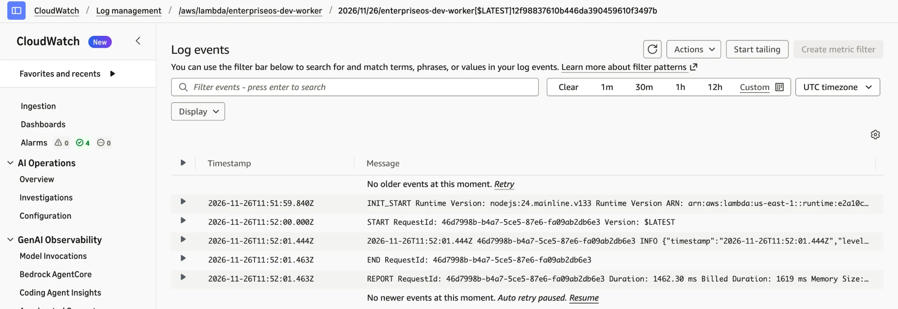

enterpriseos-dev reached CREATE_COMPLETE with 21 resources, the public HTTPS endpoint answered /health → HTTP 200, and a leave approval on the live site was processed by the worker Lambda through SQS. The live application is demonstrated during the lab evaluation.| AWS service | Deployed resources |
|---|---|
| Amazon API Gateway | HTTP API enterpriseos-dev-http-api, $default route and stage (10 req/s, burst 20), Lambda integration and invoke permission |
| AWS Lambda | enterpriseos-dev-api (web app and API) and enterpriseos-dev-worker (event processor) with its SQS trigger |
| Amazon SQS | enterpriseos-dev-events and dead-letter queue enterpriseos-dev-events-dlq, each with a TLS-only policy |
| Amazon SNS | enterpriseos-dev-notifications and enterpriseos-dev-ops-alerts topics |
| Systems Manager + KMS | SecureString parameter /enterpriseos/dev/JWT_SECRET |
| Amazon CloudWatch | 3 log groups (7-day retention) and 4 alarms |
| IAM, CloudFormation, S3 | LabRole execution role; stack enterpriseos-dev; SAM deployment bucket |
npm ci.put-parameters.sh: generated the signing secret and stored it encrypted in Parameter Store.preflight.sh: 14 read-only checks passed (region, Academy role, SAM CLI, LabRole, secret, service access).deploy.sh: packaged and smoke-tested the Lambda code, then SAM/CloudFormation created the stack and the script checked /health.The first attempt exposed an SQS policy error; CloudFormation rolled back automatically, the template was fixed and tested, and the redeployment succeeded.
| Check on the live deployment | Result |
|---|---|
| CloudFormation stack status | CREATE_COMPLETE |
GET /health from outside AWS (3 requests) | HTTP 200, status "ok" |
| Security headers (HSTS, X-Frame-Options, X-Content-Type-Options) | Present |
| Protected API without a login token | HTTP 401 (refused) |
| Leave approval → SQS → worker Lambda | Processed (Figure 1) |
| CloudWatch alarms | 4 alarms in OK state |

/health endpoint.Note: the AWS Academy sandbox deletes all resources when its session ends, so the stack is re-created with the same command before each demonstration, and cleanup.sh removes it afterwards. Full evidence: docs/evidence/aws-deployment-2026-11-26.txt in the repository.